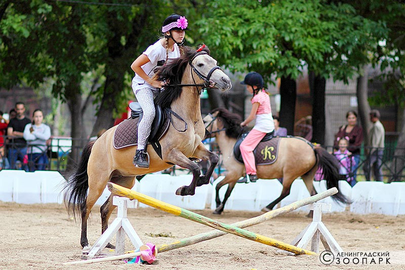
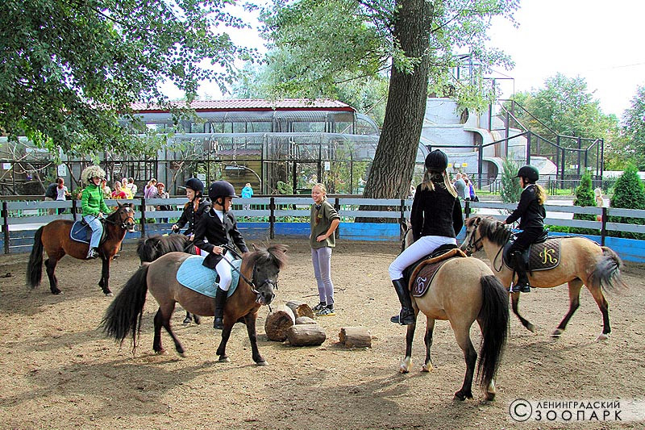

1.Занятия в пони-клубе только по предварительной записи: 8 (921) 88-77-581
2. К занятиям допускаются дети с 6 лет, не имеющие противопоказаний для занятий верховой ездой (необходима справка от терапевта). Дети старше 10 лет допускаются к занятиям на усмотрение инструктора (в зависимости от роста и веса). Оформление страховки от несчастного случая при занятии верховой ездой является обязательным условием для всех занимающихся в пони-клубе.
В процессе обучения Ваш ребенок может упасть с пони, пони может укусить его или наступить ему на ногу, а при несоблюдении техники безопасности может даже лягнуть. Внимательность и выполнение всех требований инструктора снизит до минимума риск возникновения таких ситуаций, но не исключит их полностью.
3. Запись в пони-клуб осуществляется на свободные места:с 01 по 20 октября с 10 по 31 января

4. Возможное время тренировок для начинающих (1 раз в неделю): Будние дни 14:45 – 15:45 15:45 – 16:45 16:45 – 17:45 17:45 – 18:45 В выходные дни занимаются уже опытные всадники, занимающиеся не менее полугода и допущенные инструктором к более интенсивным тренировкам (2-3 раза в неделю). *В праздничные дни и дни школьных каникул занятия могут быть перенесены на утренние часы.
5. Стоимость одного занятия – 600 р.; 4 занятия в течение месяца – 1800 р.; 8 занятий в течение месяца – 3200 р.
6. Занятия проходят в группах от 2 до 4 человек для начинающих и от 4 до 6 в группах усиленной подготовки. Занятие длится 1 час (60 минут). В этот час входит чистка и подготовка пони к верховой езде. В связи с этим первое ознакомительное занятие почти полностью проходит в помещении конюшни (до 50 минут) и лишь 10 – 20 минут верхом на пони. В дальнейшем (через несколько месяцев регулярных тренировок) 15 минут отводится на подготовку пони к верховой езде и 40 минут длится верховая тренировка на пони.

7. При неблагоприятных погодных условиях (дождь, град, сильный ветер, to ниже –15о С или выше +25о С) верховая тренировка может быть заменена на теоретический час.
7. При неблагоприятных погодных условиях (дождь, град, сильный ветер, to ниже –15о С или выше +25о С) верховая тренировка может быть заменена на теоретический час.
8. Форма одежды – спортивная. Жокейка (защитный шлем для верховой езды) предоставляется клубом. Полностью закрытая обувь без пряжек и молний с внутренней стороны (чтобы не травмировать бока пони). Для групп усиленной подготовки – специализированная обувь для верховой езды.
Своей целью мы ставим не только научить детей верховой езде, но и научить их правильному обращению с пони.
197198, Россия, Санкт-Петербург, Александровский парк, д. 1, ст. м. «Спортивная», «Горьковская» тел.: +7 (812) 232 8260; +7 (812) 230 1926
Ветклиника: +7 (812) 232 6983; факс: +7 (812) 232 8250
 В выходные дни занимаются уже опытные всадники, занимающиеся не менее полугода и допущенные инструктором к более интенсивным тренировкам (2-3 раза в неделю).
В выходные дни занимаются уже опытные всадники, занимающиеся не менее полугода и допущенные инструктором к более интенсивным тренировкам (2-3 раза в неделю).